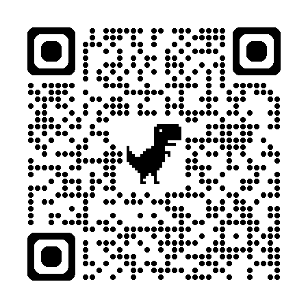
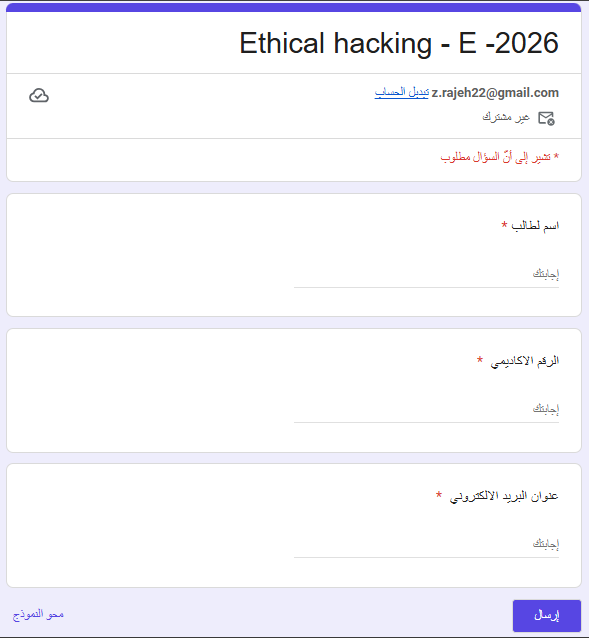

Introduction — Ethical Hacking
المقدمة — الاختراق الأخلاقي
Eng. Zahra Rajeh, M.Sc. · 36 slides, fully translated, nothing omitted.
م. زهراء راجح · ٣٦ شريحة مترجمة بالكامل دون حذف أي شيء.
- What came to mind when you heard the term ‘hacker’?
- Is it possible for an action to be legal but unethical, or illegal but ethical?
- By the end of this course, you’ll have skills that could be used for defense or offense. What personal rule will you set for yourself to ensure you never misuse these techniques?
- ما الذي خطر ببالك عندما سمعت مصطلح «هاكر»؟
- هل يمكن أن يكون الفعل قانونياً لكنه غير أخلاقي، أو غير قانوني لكنه أخلاقي؟
- بنهاية هذا المقرر ستمتلك مهارات يمكن استخدامها للدفاع أو للهجوم. ما القاعدة الشخصية التي ستضعها لنفسك لتضمن ألا تسيء استخدام هذه التقنيات أبداً؟

Hacking phases, as identified by EC-Council, are a great way to think about an attack structure. Ethical hacking phases:
مراحل الاختراق، كما حدّدها مجلس EC-Council، طريقة ممتازة للتفكير في بنية الهجوم. مراحل الاختراق الأخلاقي:

Reconnaissance is nothing more than the steps taken to gather evidence and information on the targets you want to attack.
In the second phase, scanning and enumeration, security professionals take the information they gathered in recon and actively apply tools and techniques to gather more in-depth information on the targets.
In the gaining access phase, true attacks are leveled against the targets enumerated in the second phase.
In the fourth phase, maintaining access, hackers attempt to ensure they have a way back into the machine or system they’ve already compromised. The attacker leaves back doors open for future use.
In the final phase, covering tracks, attackers attempt to conceal their success and avoid detection by security professionals. Steps taken here consist of removing or altering log files, or hiding files with hidden attributes or directories.
الاستطلاع ليس سوى الخطوات المتخذة لجمع الأدلة والمعلومات عن الأهداف التي تريد مهاجمتها.
في المرحلة الثانية، الفحص والتعداد، يأخذ مختصو الأمن المعلومات التي جمعوها في الاستطلاع ويطبّقون بشكل نشط الأدوات والتقنيات لجمع معلومات أعمق عن الأهداف.
في مرحلة الحصول على الوصول، تُشن الهجمات الحقيقية على الأهداف التي جرى تعدادها في المرحلة الثانية.
في المرحلة الرابعة، الحفاظ على الوصول، يحاول المخترقون ضمان وجود طريق للعودة إلى الجهاز أو النظام الذي اخترقوه بالفعل، ويترك المهاجم أبواباً خلفية مفتوحة للاستخدام المستقبلي.
في المرحلة الأخيرة، تغطية الآثار، يحاول المهاجمون إخفاء نجاحهم وتجنّب اكتشافهم من قبل مختصي الأمن. وتتمثل الخطوات هنا في حذف أو تعديل ملفات السجل (logs)، أو إخفاء الملفات باستخدام خصائص أو مجلدات مخفية.
REGISTRATION (slide 34)
REGISTER IN THE ETHICAL HACKING CLASSROOM (slide 35)
https://forms.gle/jFC4DHj75KzDUJ7U6
Slide 36 — Q&A.
التسجيل (الشريحة ٣٤)
سجّل في صف الاختراق الأخلاقي (الشريحة ٣٥)
https://forms.gle/jFC4DHj75KzDUJ7U6
الشريحة ٣٦ — أسئلة وأجوبة.

